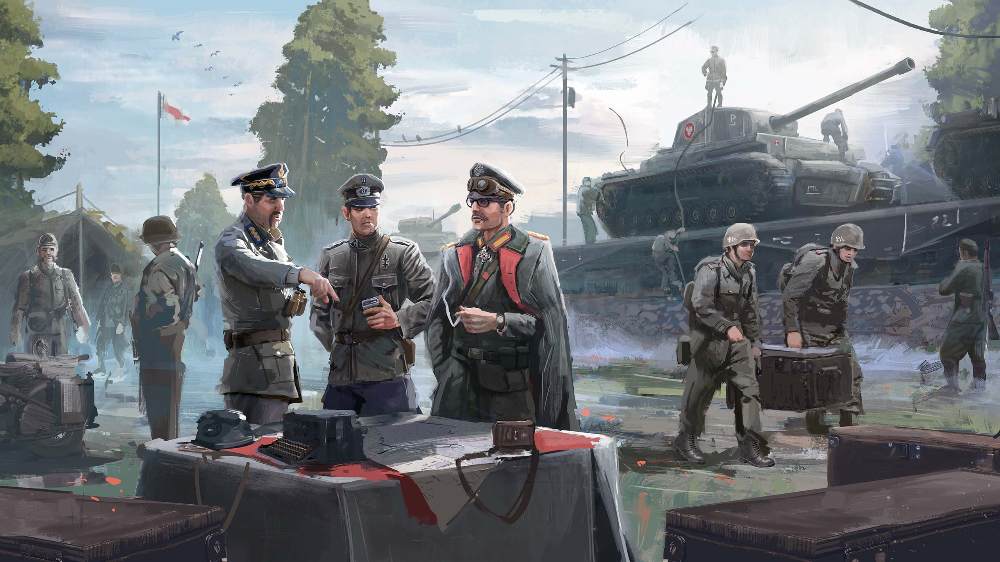

Мировая война возникла главным образом из-за неслыханного отсутствия воображения
Война, революция в России и беды всего мира представляются мне половодьем зла. Это наводнение. Война открыла шлюзы хаоса.
— «Беседы с Кафкой», 1920
У мода есть крупный сабреддит, на который подписано свыше 30 000 человек. В целом у Kaiserreich активное сообщество, мод имеет невероятно преданную фанатскую базу, многие из которых избегают ванильной игры и играют только в Kaiserreich, создавая различные фан-арты, художественную литературу и поток мемов.
Для своего комьюнити разработчики мода запустили магазин, где возможно приобрести мерч с логотипом Kaiserreich. Они планируют использовать его в качестве стартовой площадки для создания оригинальных анимированных короткометражек, действие которых происходит во вселенной мода. На данный момент магазин стал настоящим учреждением в сообществе Paradox Interactive. Команда модификации выпускает свои собственные кинематографические трейлеры.
Одним из верных признаков успеха мода является то, что его популярность побудила Paradox Interactive в ванильной версии Hearts of Iron IV предоставить Нацистской Германии дополнительный путь, позволяющий игроку силой изгнать нацистов и установить военную хунту, которая, в свою очередь, возвращает свергнутого кайзера Вильгельма II из ссылки.

Мод переносит игрока в 1936 год, чтобы противостоять миру, в котором Германия и её союзники победили в Первой мировой войне. Вместо того, чтобы использовать идею победы Германии в мировой войне как основу для «фашистской фантазии», Kaiserreich использует её как средство увидеть мир с фашистскими режимами несколько другим образом. Без краха Веймарской республики и разделения Италии условия, которые привели к возвышению сначала Бенито Муссолини, а затем Адольфа Гитлера, были устранены.
По словам команды Kaiserreich, мир мода наполнен пороховыми бочками и конфликтами, ожидающими начала. Это означает, что независимо от того, какую часть мира игрок решит исследовать, как правило будет что-то, что привлечёт его внимание.
Во вселенной Kaiserreich безраздельно властвует Германская империя как бесспорный гегемон великой центральноевропейской империи, связанной вместе с коллекцией восточных клиентских государств. Австро-Венгрия, другая крупная победившая держава, осталась нетронутой и остаётся за пределами военной орбиты Германии. Вместо того, чтобы смотреть вовне, владения Габсбургов в самом начале игры должны пройти крупный процесс укрепления, возглавляемый либо левоцентристами, либо правоцентристами.
На западе Великобритания и Франция пали в результате рабочих революций, и теперь коммунистические правительства заседают в Лондоне и Париже. Политический и военный союз этих двух стран известен как Третий интернационал. Оба государства несут в себе синдикализм. Таким образом, красная угроза поднимается в Западной Европе, а не на Востоке.
Франция также состоит в союзе с Социалистической Республикой Италия, которая взяла под свой контроль север этой страны после того, как королевство Виктора Эммануила распалось после войны. Бывшие правительства Великобритании, Франции и Италии бежали в Канаду, Алжир и Сардинию соответственно. Там располагается Антанта — третья крупная фракция в моде, который ожидает момента хаоса, чтобы вернуть свои родные земли и восстановить то, что страны считают законным правлением.
Османская империя доминирует на Ближнем Востоке, ослабленная Япония жаждет построить своё славное будущее, а огромная германская колониальная империя охватывает большую часть Африки и Восточной Азии. Германская империя управляет огромной и прилегающей африканской колонией Миттельафрика и является правящим колониальным хозяином протекторатов Юго-Восточной и Восточной Азии, включая обширный китайский торговый конгломерат. Все эти государства связаны германским союзом взаимной обороны: Рейхспактом. Германия необычайно сильна, но при этом невероятно разбросана. Она должна поддерживать статус-кво, чего бы это ни стоило, даже если это означает чрезмерную активность в отдалённых колониях.

Несмотря на победу в Первой мировой войне, к 1930-м годам бывшие Центральные державы ослабли и страдают от Великой депрессии. Проигравшие в Великой войне, а именно Великобритания и Франция, находятся в процессе подъёма и поэтому весьма могущественны. Благодаря «чёрному понедельнику» — обвалу фондового рынка в Германии — у выживших держав, таких как США, Социалистическая Британия и раздробленная Россия появляется шанс вернуть своё былое величие.
Отклонив мод от реальной истории, разработчики поставили различных деятелей на руководящие должности, таких как белый русский офицер Роман фон Унгерн-Штернберг, Вильгельм Франц Гасбург-Лотарингский из династии Габсбургов, американский демагог Хьюи Лонг, несостоявшийся фашистский лидер Освальд Мосли и маньчжурский военачальник Чжан Цзолинь.
Во вселенной Kaiserreich практически в каждом регионе происходят второстепенные сражения — есть трёхсторонняя гражданская война в Испании; гражданская война в Америке, в которой участвует слишком много сторон и которая может втянуть в себя другие фракции; Арабо-персидская коалиция, образованная для победы над османами; Четвёртая балканская война; гражданская война в Аргентине; борьба за контроль над Индийским субконтинентом, возможность революций как во французской, так и в немецкой Африке, а также в немецком Индокитае. Вторая гражданская война в Америке привела к созданию христианско-фашистского американского союзного государства.
В Kaiserreich, как и во многих других модификациях, есть свои новые ветки фокусов стран. По сравнению с деревьями фокусов ванильной (оригинальной) игры деревья фокусов мода намного более «реактивны». Во время своевременных событий, таких как выборы или при посредничестве в мирных сделках, целые разделы фокусов заблокированы. Это подходит для более тематических разделов деревьев фокусов, поскольку игрок может начать исследовать экономические или исследовательские пути, пока происходят важные события. Kaiserreich также заменяет некоторые конкретные награды, предоставляемые деревьями фокусов, временными бонусами.
В Kaiserreich нет масштабных изменений, связанных с основной механикой Hearts of Iron IV, за исключением настройки дерева фокусов и каких-либо уникальных улучшений графики. Нет новых или разных технологий для исследования, боевая и тыловая системы остались без изменений, а дипломатия, экономика и шпионаж функционируют почти так же, как и в ванильной игре.
Kaiserreich переведён на несколько языков, что делает его доступным для игроков, не играющих на английском языке.